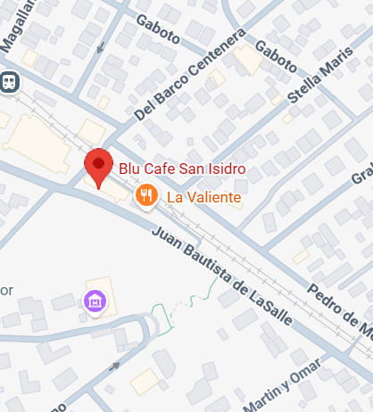
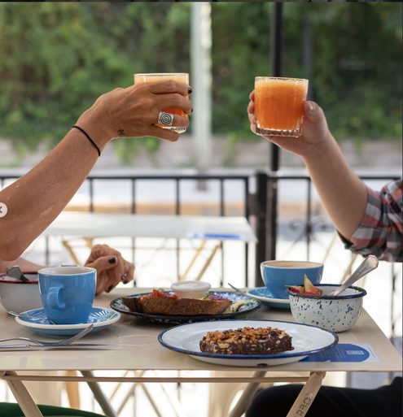

Información de Blu café

blu caféUbicación
Juan B. de La Salle 441, San Isidro
Horarios
Mar–Vie 8:00–19:30
Sáb–Dom 8:30–19:30Reservas
Podés hacer tu reserva por WhatsApp o por teléfono.
Atención al cliente
Nuestro equipo está listo para ayudarte. Escribinos.

Nos vemos en BLU!
Horarios
| Martes | 8:00 – 19:30 |
|---|---|
| Miércoles | 8:00 – 19:30 |
| Jueves | 8:00 – 19:30 |
| Viernes | 8:00 – 19:30 |
| Sábado | 8:30 – 19:30 |
| Domingo | 8:30 – 19:30 |
| Lunes | Cerrado |
Preguntas frecuentes
¿Puedo ir con mi perro?
¡Sí! Somos pet friendly y hasta tenemos cookies para perros.
¿Tienen opciones sin TACC o veganas?
Sí: brownie, alfajor de maicena y torta de coco sin TACC, alfajores y torta veganos, y todos los cafés se pueden pedir con leche de almendras.
¿Cómo hago una reserva?
Escribinos por WhatsApp o llamanos al +54 11 1234 5678 y te confirmamos la mesa.
¿Venden café para llevar a casa?
Sí, tenemos ¼ kg de nuestro blend y otros productos en la tienda online.